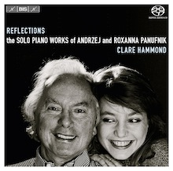
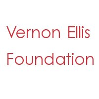

▸ Click here to download a press release for the disc.
▸ Click here to view the disc on eClassical.
|  | ||||
▸ Album Cover |
▸ Andrzej and Roxanna |
▸ Andrzej and Roxanna |
▸ Clare Hammond |
▸ Clare Hammond |
Twelve Miniature Studies, Nos. 11 and 6 by Andrzej Panufnik
Hommage à Chopin, m. 4 by Andrzej Panufnik
Glo by Roxanna Panufnik
FILM: Twelve Miniature Studies, Nos. 7-12 by Sir Andrzej Panufnik, recorded live at the Wigmore Hall in 2011.
This disc has been supported by the following organisations:
 |
 |
 |
 | |
▸ Polish Cultural Institute |
▸ Fidelio Charitable Trust |
▸ RVW Trust |
Vernon Ellis Foundation |
▸ Stradivari Trust |